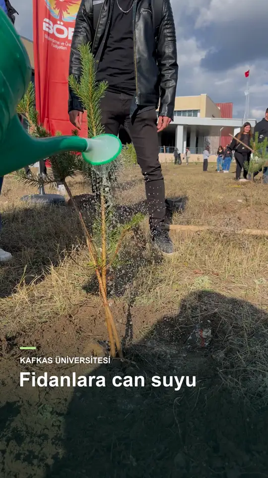
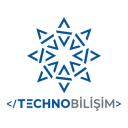
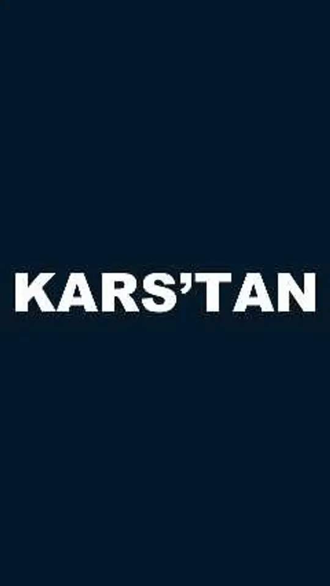
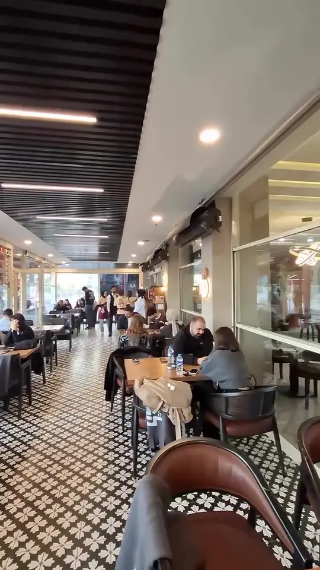
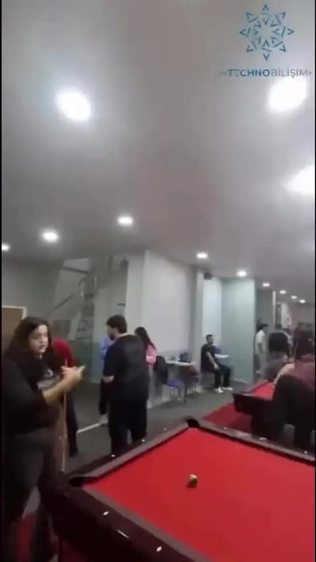
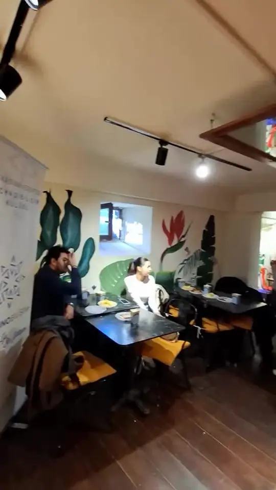
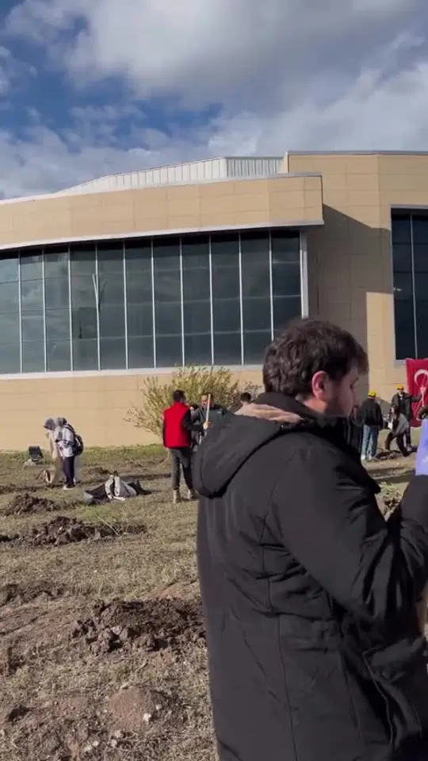
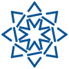

Fidanlara can suyu
Fidanları toprakla buluşturup ilk can suyunu veriyoruz.

Üyelik formu (yeni sekmede açılır)Techno Bilişim, Kafkas Üniversitesi İktisadi ve İdari Bilimler Fakültesi Yönetim Bilişim Sistemleri öğrencilerinin bir araya geldiği bir öğrenci kulübüdür. Teknolojiye duyduğumuz merakı birlikte öğrenmeye, üretmeye ve deneyim paylaşmaya dönüştürmek için çalışıyoruz.
Atölyelerimizde ve eğitimlerimizde derslerde edindiğimiz bilgileri uygulamayla buluşturuyor; yapay zekâ, siber güvenlik, robotik kodlama ve üç boyutlu baskı gibi alanları keşfediyoruz. Teknik gezilerle üretim ve çalışma ortamlarını yerinde tanıyor, kariyer buluşmalarıyla mesleki yolculuğumuza farklı bakış açıları katıyoruz.
Kulüp yaşamını yalnızca teknik çalışmalarla sınırlamıyoruz. Tanışma buluşmaları, turnuvalar ve sosyal etkinliklerle öğrenciler arasındaki iletişimi güçlendiriyoruz. Sosyal sorumluluk çalışmalarında ise bilgimizi ve emeğimizi çevremizle paylaşmaya, üniversite ile yaşadığımız şehir arasında bağ kurmaya önem veriyoruz.
Yeni bir şey öğrenmek, bir fikri birlikte geliştirmek ya da etkinliklerin hazırlanmasına katkı sunmak istiyorsan sen de aramıza katılabilirsin. Bizim için kulüp, herkesin katkısıyla gelişen ortak bir öğrenme alanı.
AI WINTER'25 Kış Yapay Zekâ Zirvesi · 22.12.2025
Siber Farkındalık ve Güvenlik Eğitimi · 24.10.2025
ÜNİDES Robotik Kodlama Yarışması · 04.06.2025
3D Baskı Eğitimi · 14.03.2025

Fidanları toprakla buluşturup ilk can suyunu veriyoruz.

Kulüp kamerasından kısa bir kesit.

Bol kahkaha, bol sohbet; tanıştık, kaynaştık!



Fidanları toprakla buluşturup ilk can suyunu veriyoruz.
24 faaliyet
Rapor metninde tek bir faaliyete kesin olarak bağlanmayan, ancak kulüp arşivine ait ek fotoğraflar.
Kulüp arşivinden 26 kare.
01 / 26ÜNİDES Robotik Kodlama Yarışması fotoğrafı 1
Bilardo, tanışma, zirve, Vize Fest, siber güvenlik ve robotik kodlama etkinliklerinden afiş ve anı fotoğrafları.
Fidan dikimi ve sulama çalışmasından görüntüler kulüp kamerasında.
Dijital dünyada güvenliği konuştuğumuz eğitimden ve katkı sunanlara teşekkür takdiminden kareler.
Rekabetin, eğlencenin ve dostluğun buluştuğu turnuvamızdan; masa başından kupa törenine.
Kars’ın üretim ve ulaşım noktalarına teknik gezi: Kars Çimento Fabrikası, Kars Harakani Havalimanı ve Kars Şeker Fabrikası.
Birlikte sohbet edip kaynaştığımız buluşmanın anıları kulüp kamerasında.
Kulüp, bölüme yeni başlayan öğrencilere akademik süreçleri, kampüs yaşamını ve kulüp çalışmalarına nasıl katılabileceklerini tanıttı. Üniversite haberi 9 Ekim 2026’da yayımlandı.
Ahmet Arslan Kültür ve Kongre Merkezi’nde siber güvenlik, eğitim ve yapay zekâ üzerine sunumlar yapıldı. Programda Dijital Dönüşüm sergisi de yer aldı.
Vize haftası öncesinde öğrenciler, Ahmet Arslan Kültür ve Kongre Merkezi’nde EchnoLineBand konserinde buluştu.
Yönetim Bilişim Sistemleri öğrencileri ve Techno Bilişim Kulübü, teknoloji projelerini yakından tanımak için festivale katıldı.
3 Haziran’da düzenlenen yarışmada kulüp üyeleri genç katılımcılara teknik destek verdi.
Kulübün Ankara gezisi, YBS Bölümünün 5 Haziran 2025 tarihli etkinlik kaydında yer alıyor.
YBS Bölümü, kulübün kariyer buluşmasını 15 Mayıs 2025 tarihli etkinlik arşivinde duyurdu.
İİBF’de Cumali Güney Sabur ile üç boyutlu baskının kullanım alanlarını inceleyen katılımcılar, kendi üç boyutlu tasarımlarını hazırladı. Eğitimin proje koordinasyonunu YBS öğrencileri üstlendi.
Kulübün Erasmus+ programını tanıttığı toplantı, YBS Bölümünün Mart 2025 arşivinde yer alıyor.
9 Aralık’ta Ahmet Arslan Kültür ve Kongre Merkezi’nde düzenlenen zirve, yapay zekâ ve endüstrinin geleceğini gündeme taşıdı.
Techno Bilişim ve Damla Topluluğu, Kars’taki iki okuldan öğrencilerle kampüste buluştu. Çocuklar ve öğretmenleri 30 fidan ve 12 meyve ağacı dikti. Çevre temizliği ve kampüs gezisi de programdaydı.

Kulübe katılmak için üyelik formuna, etkinlik duyuruları için sosyal medya hesaplarımıza ulaşabilirsin.
Üyelik başvuru formu (yeni sekmede açılır)